El péndulo simple ideal esta formado por una masa suspendida de una cuerda o varilla de longitud \(\ell\). Suponemos que no existe fricción ni una fuerza externa, por lo que el movimiento depende únicamente de la gravedad. La variable \(\theta(t)\) representa el ángulo del péndulo respecto a la posición vertical hacia abajo, mientras que \(\omega(t)\) representa su velocidad angular.
El movimiento está descrito por la ecuación $$\frac{d^2\theta}{dt^2}+\frac{g}{\ell}\sin(\theta)=0.$$ Para poder resolverla numéricamente con el método RK45, la transformamos en un sistema de dos ecuaciones de primer orden: $$\frac{d\theta}{dt}=\omega$$ y $$\frac{d\omega}{dt}=-\frac{g}{\ell}\sin(\theta).$$ A partir de este sistema exploraremos cómo las condiciones iniciales y la longitud del péndulo afectan su movimiento.
Campo de direcciones
Antes de obtener soluciones particulares, construimos el campo de direcciones en el plano \((\theta,\omega)\). Cada flecha representa la dirección en la que evolucionaría el estado del péndulo a partir de una determinada posición angular y velocidad angular. De esta forma podemos observar de manera geométrica cómo cambia el movimiento dependiendo del estado inicial del sistema.
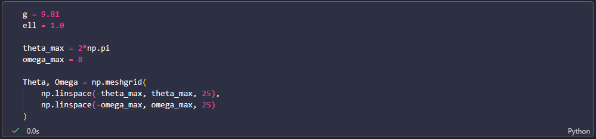
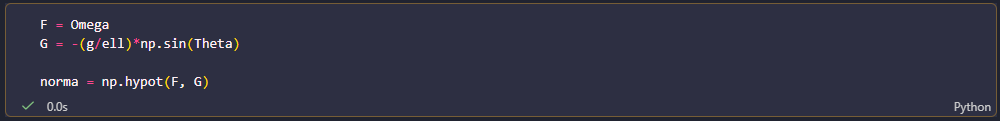
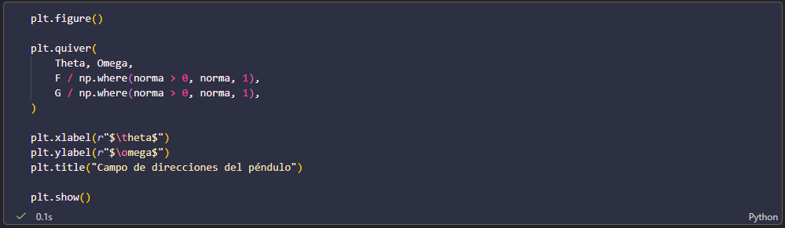
En este plano, los puntos se describen mediante el ángulo \(\theta\) y la velocidad angular \(\omega\). La dirección de cada flecha está determinada por las ecuaciones \(\frac{d\theta}{dt}=\omega\) y \(\frac{d\omega}{dt}=-(g/\ell)\sin(\theta)\). Prestamos especial atención a las regiones cercanas a \(\theta=0\) y \(\theta=\pi\), ya que corresponden a la posición inferior y superior del péndulo, respectivamente. Este campo nos servirá como referencia para interpretar las trayectorias que obtendremos posteriormente.
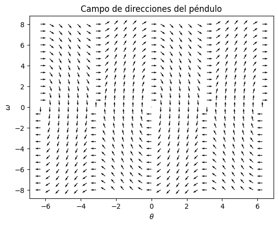
El campo muestra que el movimiento depende simultáneamente de la posición angular y de la velocidad. Cuando \(\omega>0\), el ángulo aumenta, mientras que cuando \(\omega < 0\) disminuye. Además, la aceleración angular depende de \(\sin(\theta)\), por lo que cambia de acuerdo con la posición del péndulo. Estas direcciones nos permiten anticipar los diferentes tipos de movimiento que estudiaremos a continuación.
Exploración de las condiciones iniciales
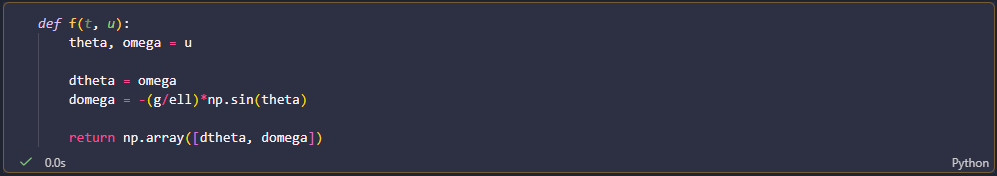
En esta actividad mantuvimos fijos la gravedad y la longitud del péndulo, y modificamos las condiciones iniciales \(\theta_0\) y \(\omega_0\). Con esto buscamos observar cómo la posición y la velocidad iniciales determinan el tipo de movimiento que presenta el péndulo. Analizamos tanto situaciones en las que el péndulo oscila alrededor de la posición de equilibrio como aquellas en las que adquiere suficiente movimiento para realizar vueltas completas.
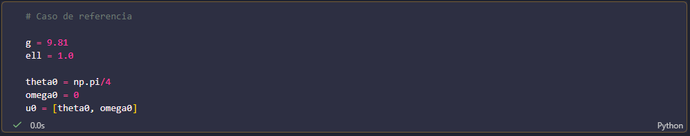
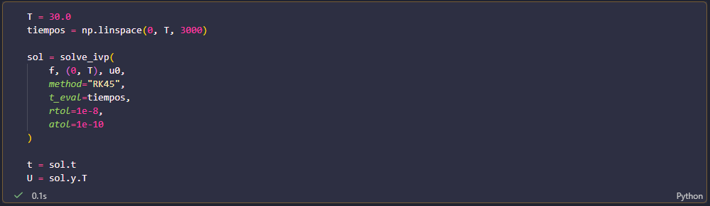
En el primer caso soltamos el péndulo desde un ángulo inicial \(\theta_0=\pi/4\), con velocidad angular inicial \(\omega_0=0\). La gráfica de \(\theta\) contra el tiempo muestra que el péndulo se desplaza hacia la posición inferior y posteriormente regresa, repitiendo este movimiento. En el espacio de fases, la trayectoria permanece alrededor del punto \((0,0)\), correspondiente a la posición de equilibrio estable.
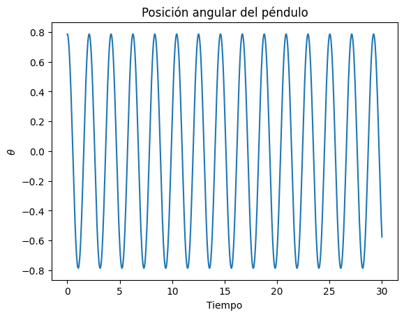
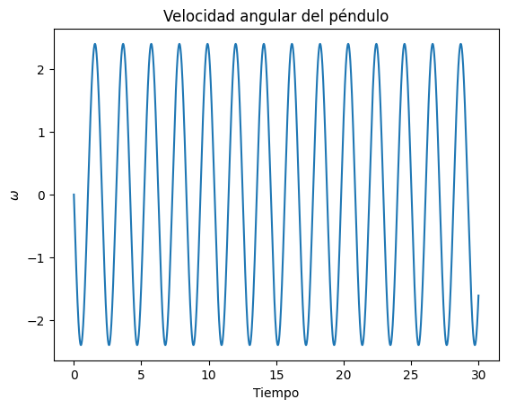
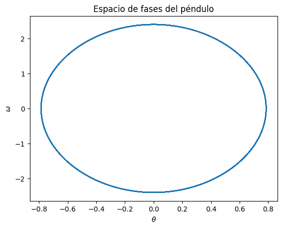
En el segundo caso comenzamos desde la posición inferior, \(\theta_0=0\), pero proporcionamos una velocidad angular inicial mayor, \(\omega_0=8\). A diferencia del caso anterior, el péndulo ya no queda limitado a oscilar entre dos posiciones, sino que puede superar la posición superior y realizar vueltas completas. Esto se observa en la evolución de \(\theta\) y en la trayectoria correspondiente en el espacio de fases.
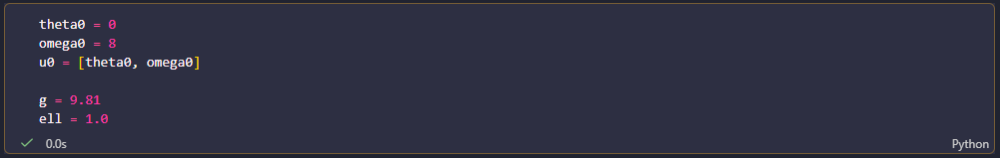
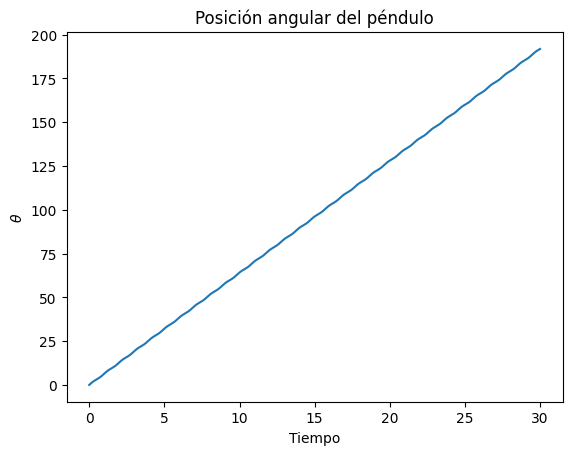
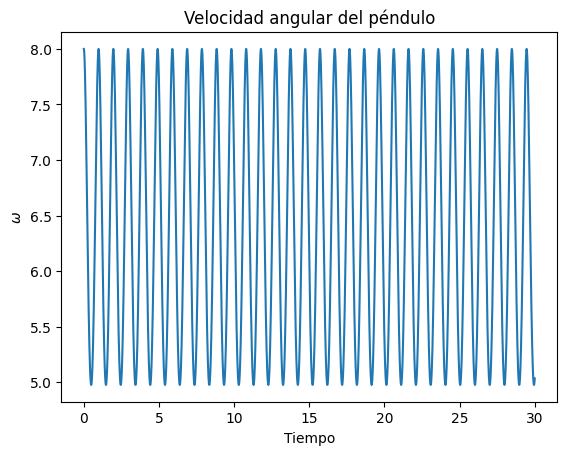
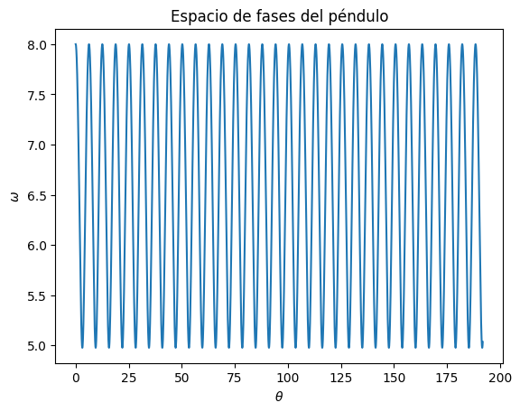
La comparación entre ambos casos muestra que no basta con conocer la posición inicial para determinar el movimiento: la velocidad angular inicial también tiene un papel fundamental. Una misma longitud y la misma aceleración de la gravedad pueden producir una oscilación o una rotación dependiendo de las condiciones iniciales. El espacio de fases permite distinguir estos comportamientos de manera geométrica, mientras que las gráficas temporales muestran directamente cómo evolucionan el ángulo y la velocidad angular.
Efecto de la longitud
En esta actividad estudiamos cómo influye la longitud del péndulo en su movimiento. Para ello mantenemos constantes la aceleración de la gravedad y las condiciones iniciales, y comparamos una longitud de referencia \(\ell=1\) con un péndulo de longitud \(\ell=2\). De esta manera podemos observar los cambios producidos únicamente por modificar la longitud.
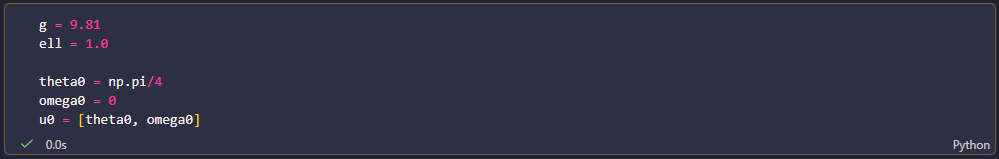
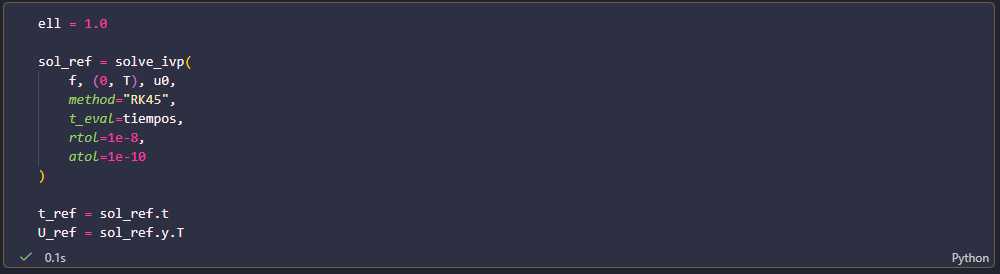
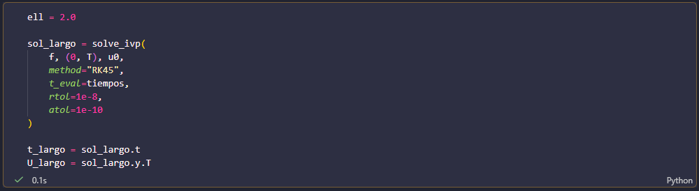
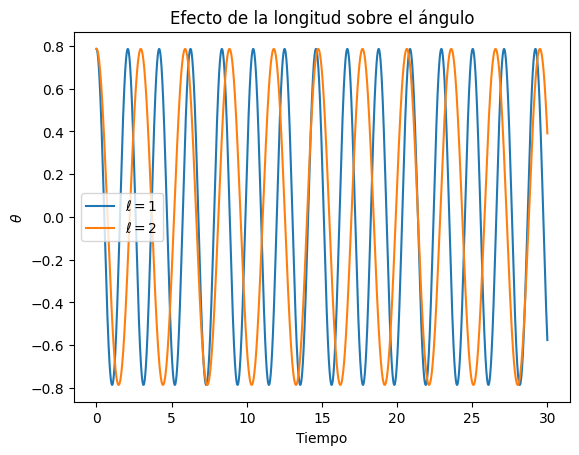
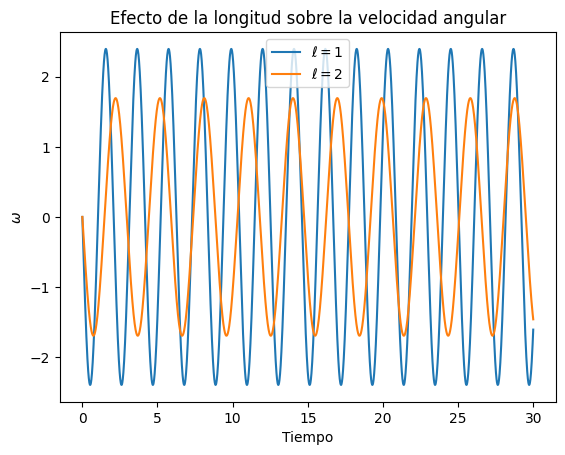
Al comparar las gráficas temporales observamos que el péndulo con \(\ell=2\) oscila más lentamente que el péndulo con \(\ell=1\). Durante el mismo intervalo de tiempo, el péndulo más largo realiza menos oscilaciones. Esto se debe a que al aumentar \(\ell\) disminuye el término \(g/\ell\) que aparece en la ecuación del movimiento, modificando la evolución de la velocidad angular y del ángulo.
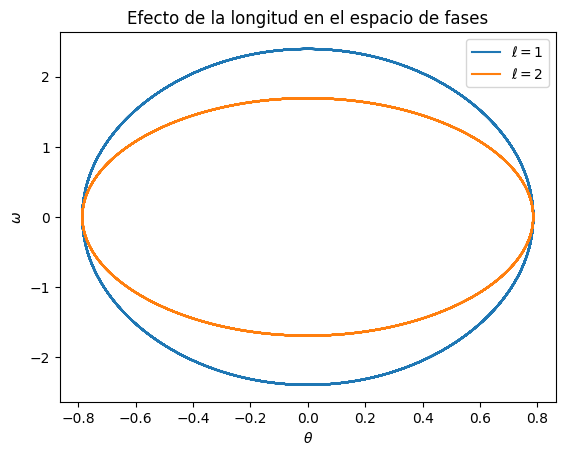
En el espacio de fases también podemos observar una diferencia entre ambas longitudes. Las trayectorias representan la relación entre el ángulo \(\theta\) y la velocidad angular \(\omega\) durante el movimiento. Al modificar la longitud cambia la velocidad con la que el sistema recorre esta trayectoria, reflejando la influencia de \(\ell\) sobre la dinámica del péndulo.
La comparación muestra que cambiar la longitud del péndulo modifica directamente su dinámica, aun cuando la posición y la velocidad iniciales sean las mismas. Por lo tanto, la longitud es un parámetro que determina qué tan rápido evoluciona el movimiento del péndulo.
Interpretación del movimiento del péndulo
A partir de las simulaciones anteriores podemos distinguir dos tipos principales de movimiento del péndulo: las oscilaciones y las rotaciones completas. En una oscilación, el ángulo \(\theta\) permanece limitado entre dos valores extremos. El péndulo se aleja de la posición de equilibrio, alcanza un punto en el que su velocidad angular es cero y posteriormente regresa, repitiendo este movimiento. En cambio, cuando el péndulo tiene suficiente energía, puede superar la posición superior y continuar su movimiento hasta realizar vueltas completas.
La velocidad angular también permite entender cómo se desarrolla este movimiento. Cuando el péndulo se acerca a la posición inferior, \(\theta=0\), la magnitud de su velocidad angular \(|\omega|\) aumenta, ya que la gravedad favorece el movimiento hacia esta posición. Al alejarse de ella, \(|\omega|\) disminuye hasta llegar a cero en los extremos de una oscilación. En estos puntos el péndulo se detiene momentáneamente y cambia el sentido de su movimiento.
El campo de direcciones también permite analizar lo que sucede cerca de las posiciones de equilibrio. Cuando el péndulo comienza cerca de \(\theta=0\) con \(\omega_0=0\), se encuentra cerca de la posición inferior y estable, por lo que su movimiento permanece alrededor de esta posición. Por el contrario, \(\theta=\pi\) corresponde a la posición superior, que es inestable: una pequeña perturbación hace que el péndulo se aleje de ella. De esta manera, el campo de direcciones permite distinguir geométricamente el comportamiento alrededor de ambas posiciones.
También observamos que la longitud del péndulo modifica la rapidez con la que ocurre el movimiento. Al aumentar \(\ell\), el término \(g/\ell\) disminuye y el péndulo oscila más lentamente. Por ello, para el mismo intervalo de tiempo, un péndulo más largo realiza menos oscilaciones que uno más corto. Sin embargo, las condiciones iniciales también son fundamentales, ya que determinan si el sistema permanece en un movimiento oscilatorio o alcanza la energía necesaria para realizar una rotación completa.
Finalmente, el espacio de fases \((\theta,\omega)\) nos permite representar toda esta dinámica de manera geométrica. Cada punto de una trayectoria indica simultáneamente la posición angular y la velocidad del péndulo. Al recorrer la trayectoria en el sentido del tiempo podemos seguir cómo el péndulo se mueve, acelera, alcanza sus puntos de velocidad nula y cambia de dirección. Así, el espacio de fases proporciona una representación compacta del comportamiento del sistema y permite relacionar directamente la geometría de las trayectorias con el movimiento físico del péndulo.